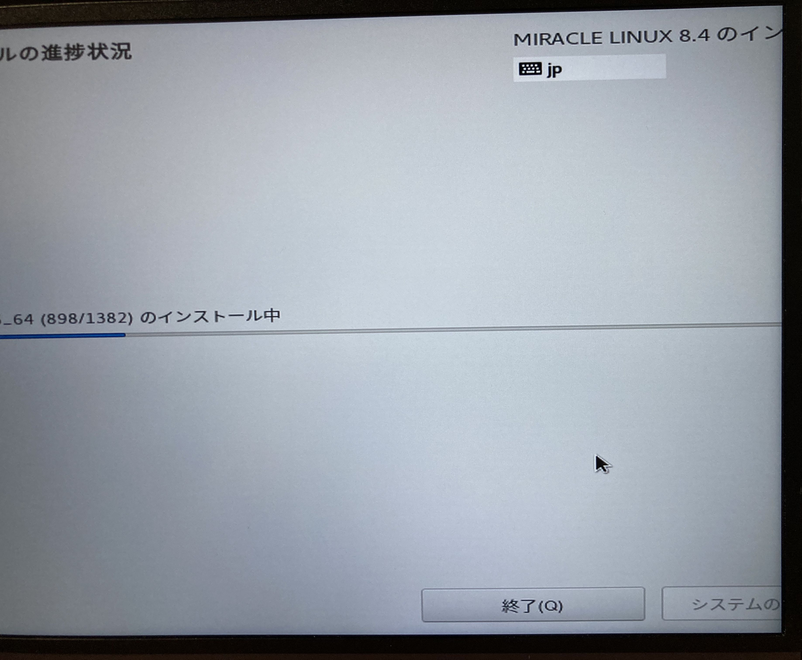

最近、Celeron N5xxxなどのJasper Lakeを搭載したパソコンが販売されているので今回はCeleron N5095を搭載したBeelink U59にMIRACLE LINUX 8.4をインストールしてみました。HDMIやUSB-C Alt modeでのインストール時に解像度が800x600になってしまい難儀したのでインストール後に行った対策の紹介です。
まずはインストール
公式の手順の実機の項目を参照してインストールを進めます。
早速画面の端っこまで表示されずに見切れていると思いますが、ギリギリボタンが画面内に収まっているので進めます。

インストールが終了してデスクトップ画面が表示されたら、端末を起動します。そしてグラフィック関係のエラーが出ているのを確認します。
$ dmesg | grep i915
色々長いのが出てくるかもしれませんが、下記のような一文が確認できると思います。
4e55というのは手持ちのコンピュータではそうなっているのですが他のIDの可能性があります。
use i915.force_probe=4e55 module parameter or CONFIG_DRM_I915_FORCE_PROBE=4e55 configuration
option
そしたらこの通りモジュールパラメータを設定しましょう。好きなエディタで/etc/default/grubを開き(要root権限 : sudoを頭につけるとか。)、GRUB_CMDLINE_LINUX=で始まる行の最後にパラメータを付け加えます。ダブルクォーテーションの中に付け加えてください。
Before
GRUB_CMDLINE_LINUX="crashkernel=auto resume=/dev/mapper/ml-swap rd.lvm.lv=ml/root rd.lvm.lv=ml/swap rhgb quiet"
After
GRUB_CMDLINE_LINUX="crashkernel=auto resume=/dev/mapper/ml-swap rd.lvm.lv=ml/root rd.lvm.lv=ml/swap rhgb quiet i915.force_probe=4e55"
GRUBの設定を変更したのでアップデートします。なんとこのBeelink U59は現代においてBIOSを使用しているので、今時のEFIではなくBIOSの方のディレクトリのgrub.cfgを生成します。
$ sudo grub2-mkconfig -o /boot/grub2/grub.cfg
ここまで設定を終えたら再起動してみましょう。手元では4Kサイズまで選ぶことができました。
設定からHDMI出力に切り替えると音も出ました。もしかしたらDRMが必要な動画は再生できないかもしれませんが試していません。